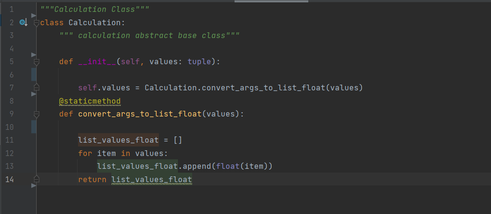
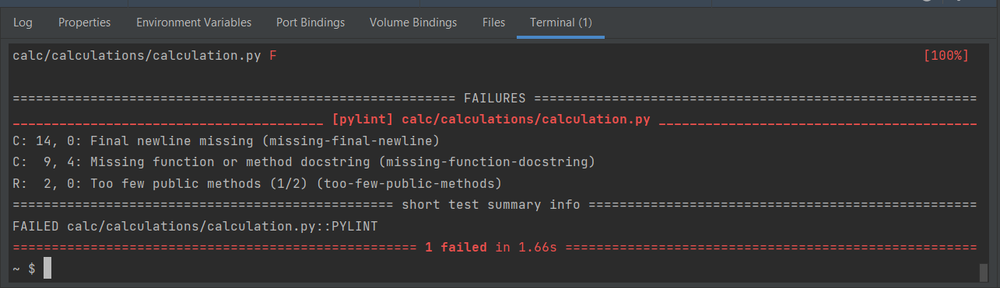
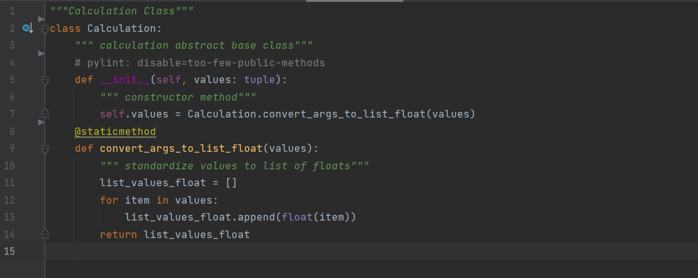
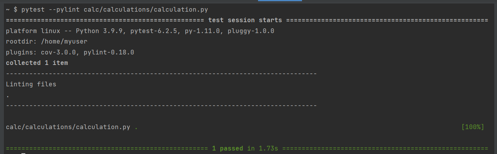

A user-defined prototype for an object that defines a set of attributes that characterize any object of the class. The attributes are data members (class variables and instance variables) and methods, accessed via dot notation.
A variable that is shared by all instances of a class. Class variables are defined within a class but outside any of the class's methods. Class variables are not used as frequently as instance variables are.
A class variable or instance variable that holds data associated with a class and its objects.
The assignment of more than one behavior to a particular function. The operation performed varies by the types of objects or arguments involved.
A variable that is defined inside a method and belongs only to the current instance of a class.
The transfer of the characteristics of a class to other classes that are derived from it.
An individual object of a certain class. An object obj that belongs to a class Circle, for example, is an instance of the class Circle.
The creation of an instance of a class.
A special kind of function that is defined in a class definition.
A unique instance of a data structure that's defined by its class. An object comprises both data members (class variables and instance variables) and methods.
The assignment of more than one function to a particular operator.
A namespace is a system that has a unique name for each and every object in Python. An object might be a variable or a method.
Constructors are generally used for instantiating an object. The task of constructors is to initialize(assign values) to the data members of the class when an object of the class is created.
PyTest is a testing framework that allows users to write test codes using Python programming language.
Fixtures are functions, which will run before each test function to which it is applied. Fixtures are used to feed some data to the tests such as database connections, URLs to test and some sort of input data.
Type hinting is a formal solution to statically indicate the type of a value within your Python code.
In Python, Type Casting is a process in which we convert a literal of one type to another.
Unit Testing is the first level of software testing where the smallest testable parts of a software are tested. This is used to validate that each unit of the software performs as designed.
The unittest test framework is python’s xUnit style framework.
Facade is a structural design pattern that provides a simplified (but limited) interface to a complex system of classes, library or framework. While Facade decreases the overall complexity of the application, it also helps to move unwanted dependencies to one place.
Design Patterns is the most essential part of Software Engineering, as they provide the general repeatable solution to a commonly occurring problem in software design. They usually represent some of the best practices adopted by experienced object-oriented software developers.
Encapsulation is the packing of data and functions that work on that data within a single object. By doing so, you can hide the internal state of the object from the outside. This is known as information hiding. A class is an example of encapsulation.
Polymorphism defines the ability to take different forms. Polymorphism in Python allows us to define methods in the child class with the same name as defined in their parent class.
Abstraction is used to hide the internal functionality of the function from the users. The users only interact with the basic implementation of the function, but inner working is hidden.
Factory Method is a Creational Design Pattern that allows an interface or a class to create an object, but lets subclasses decide which class or object to instantiate. Using the Factory method, we have the best ways to create an object.
Pylint Usage in Python
From this article, you will be learning about Pylint in Python. It is a static code analysis tool to find coding errors in your Python code.
What is Pylint?
Pylint is a tool that
Lists Errors which comes after execution of that Python code
Enforces a coding standard and looks for code smells
Suggest how particular blocks can be updated
Offer details about the code’s complexity
How to install and use Pylint?
To install it on systems such as Windows 10, Mac OS, Linux, use the following command:
pip install pylint
To verify the pylint installation, type the following command
pylint --version
You can also use alternative methods such as:
1. On Debian, Kali Linux, Ubuntu based systems such as Ubuntu, Elementary, etc.
# Debian, Kali Linux, Ubuntu
sudo apt install pylint
2. On Fedora
# Fedora
sudo dnf install pylint
3. On OpenSUSE
# OpenSUSE
sudo zypper install pylint
Program Examples
Here is a simple program (calculator.py) having some styling issues.

Run pylint
Below is the output after you pass the above calculator to Pylint. It lists down multiple styling issues in the program.

A better version of the above sample:
After fixing the code, the modified version looks like this:

The output will come as:

Is Pylint Worth It?
This introduction emphasizes Pylint’s benefits. Pylint beautifies code, it finds likely errors, and with few exceptions, most practitioners who try Pylint adopt it long-term.
Pylint has tradeoffs, but they are generally small and manageable as:
It is easy to run Pylint in IDEs and Continuous Integration (CI) pipelines.
Pylint’s diagnostics are lucid.
While Pylint takes many minutes on large programs, the time it takes is almost always small in comparison with the errors it spotlights.
If your code in a particular style that Pylint doesn’t like, it might be that your style isn’t widely understood, and this is unfamiliar to other team members.
If Pylint is wrong, and your style deserves acceptance, you can probably write a pylintrc directive to work out a compromise.